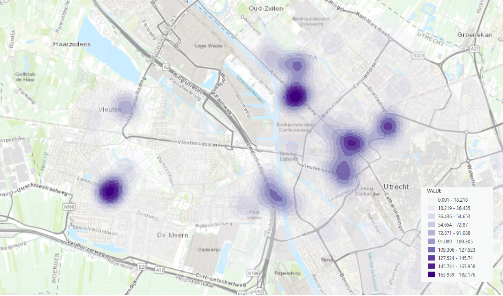

Kernel Density Map
Density of Cherry Trees in Utrecht, The Netherlands
This Kernel Density map of cherry trees in Utrecht provides a visual representation of the spatial distribution and density of cherry trees within the city. This map transforms (point) data on the location of the trees into a continuous surface that highlights areas with high and low concentrations of cherry trees.
The map was made with ArcGIS Online and the dataset was derived from the Gemeente Utrecht online data hub. It consists of points representing individual trees in Utrecht. A layer that only contains cherry trees was created first before generating the Kernal Density map. Clusters where cherry trees are more prevalent are then highlighted in purple creating multiple “cherry tree hot spots” along the map.